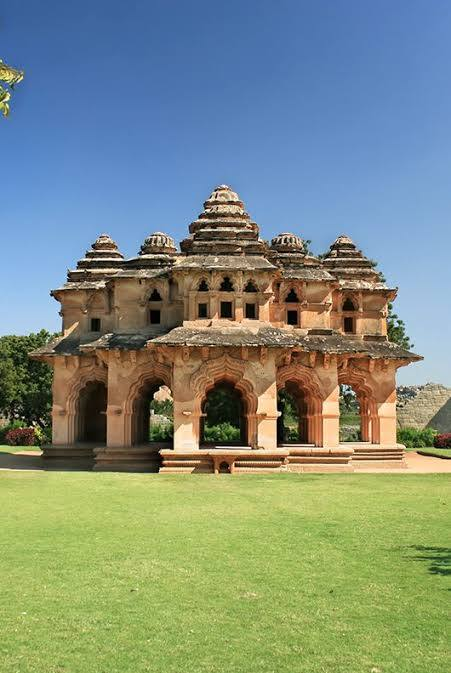

Hampi is a UNESCO World Heritage Site in Karnataka, India, famously known as the "Lost City." Once the flourishing capital of the 14th-century Vijayanagara Empire, it is now a sprawling open-air museum set against a surreal landscape of massive granite boulders and lush paddy fields
Back to Destinations